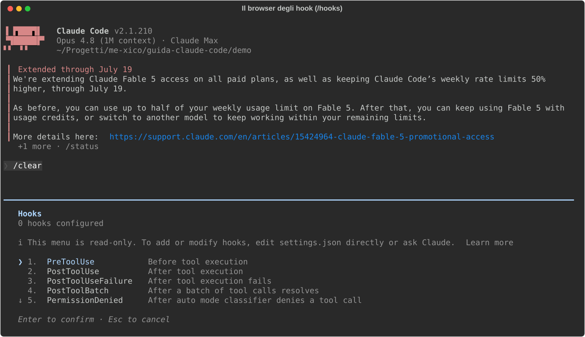

07 - Hook: quando le regole smettono di essere consigli¶
Verificato il 15 luglio 2026 sulla doc ufficiale (v2.1.210).
Cos'è un hook, a che serve¶
Tutto quello che scrivi in CLAUDE.md è advisory: Claude lo segue quasi sempre, ma "quasi" non è "sempre". Un hook invece è deterministico: uno script che il sistema esegue a un evento preciso, ogni volta, che Claude lo voglia o no. L'analogia: CLAUDE.md è il cartello "si prega di timbrare", un hook è il tornello: non si passa senza. Regola di ripartizione: preferenze e conoscenza → CLAUDE.md; garanzie → hook.
Bonus non ovvio: un deny imposto da un hook PreToolUse vale anche in
bypassPermissions: è l'unico guardrail che nessuna modalità scavalca.
Dove sta e chi lo crea¶
Gli hook si dichiarano nella chiave "hooks" dei settings.json che già
conosci dal cap. 02: utente (~/.claude/settings.json), progetto
(.claude/settings.json, via git) o locale (.claude/settings.local.json),
e le definizioni si sommano tra i livelli. Li scrivi tu editando il
JSON (o chiedendo a Claude di farlo); vengono caricati dal sistema, non dal
modello.
In sessione, /hooks apre un browser di consultazione: la lista di tutti
gli eventi disponibili e quanti hook hai configurato su ciascuno.

Come si scrive¶
L'hook più utile per un frontend dev (esempio ufficiale): dopo ogni edit di Claude, Prettier formatta il file.
{
"hooks": {
"PostToolUse": [
{
"matcher": "Edit|Write",
"hooks": [
{
"type": "command",
"command": "jq -r '.tool_input.file_path' | xargs npx prettier --write"
}
]
}
]
}
}
Smontiamolo pezzo per pezzo:
| Elemento | Significato |
|---|---|
"PostToolUse" |
l'evento: questo blocco scatta dopo ogni uso di un tool |
"matcher": "Edit\|Write" |
il filtro: solo se il tool si chiama Edit o Write (il \| è un'alternativa) |
"hooks": [...] |
la lista di script da eseguire quando evento + matcher combaciano |
"type": "command" |
tipo di hook: un comando shell (vedi "Oltre gli script" per gli altri) |
"command" |
lo script: legge il JSON dell'evento da stdin, jq ne estrae .tool_input.file_path, xargs lo passa a Prettier |
Risultato: la CI non fallirà mai più per il formato. Non perché Claude "si ricorda", ma perché non può succedere altrimenti.
Come funziona, passo passo¶
- Claude sta per usare (o ha appena usato) un tool → l'evento corrispondente scatta.
- Il sistema seleziona gli hook configurati su quell'evento il cui
matchercombacia. - Ogni hook riceve su stdin un JSON con i dettagli:
tool_name,tool_input(confile_path,command…),cwd. - Lo script fa il suo lavoro e risponde con l'exit code:
0= tutto ok; per alcuni eventi lo stdout viene iniettato nel contesto di Claude (è così che un hook "gli parla");2= blocca l'azione, e lo stderr torna a Claude come spiegazione del perché.- Claude non può scavalcare né negoziare: tutto avviene fuori dal modello.
Gli eventi che userai davvero¶
| Evento | Scatta… | Uso tipico |
|---|---|---|
PreToolUse |
prima di un tool | bloccare/filtrare comandi e file |
PostToolUse |
dopo un tool | autoformat, lint, log dei comandi |
Stop |
quando Claude finisce il turno | eseguire i test come cancello (cap. 11) |
UserPromptSubmit |
a ogni tuo prompt | iniettare contesto, validare |
SessionStart |
avvio / /clear / dopo compact |
ricaricare regole o env |
Notification |
Claude chiede permesso o è idle | notifica desktop |
PreCompact / PostCompact |
attorno alla compattazione | salvare/re-iniettare contesto |
(La lista completa conta ~30 eventi: è quella che vedi nel browser di
/hooks qui sopra.)
Tre esempi ufficiali pronti all'uso¶
Proteggere i file che Claude non deve toccare. PreToolUse con matcher
Edit|Write: uno script che legge il file_path dallo stdin ed esce con 2
se matcha .env, .git/ o package-lock.json. Il deny nei permessi
(cap. 02) copre le letture; questo copre le scritture, con logica arbitraria
perché lo script sei tu a scriverlo.
Notifica desktop quando serve il tuo ok. Notification con matcher
permission_prompt: notify-send su Linux, osascript su macOS. Lanci un
task lungo, vai a fare altro: ti chiama lui.
Regole che sopravvivono alla compattazione. SessionStart con matcher
compact: echo 'Reminder: use Bun, not npm.', lo stdout viene iniettato
nel contesto fresco (è il caso "exit 0 + stdout" del punto 4 qui sopra).
Oltre gli script¶
Il type non è solo command: esistono hook prompt (una chiamata a un
modello piccolo che risponde {"ok": true/false}, "questo comando è
pericoloso?"), agent (un subagent di verifica multi-turno, cap. 06) e
http (webhook). E gli hook si possono definire anche nel frontmatter di
skill e agenti, che valgono solo mentre quelli sono attivi, e nei plugin
(cap. 09).
Sicurezza¶
Gli hook girano con le tue credenziali e senza conferme: leggi qualunque
hook prima di copiarlo da internet, e tratta il settings.json di progetto
come codice da review (arriva via git dal team). È potere vero: usalo per i
guardrail, non per la magia.
In sintesi: un hook per il formato (subito), uno per i file proibiti, uno per le notifiche. Quando ti accorgi che stai sperando che Claude faccia una cosa ogni volta, quella cosa vuole diventare un hook. Prossimo capitolo: MCP, ovvero dare occhi e mani nuove a Claude.